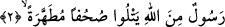

ayrıntısı ile beyân etmiştir.
Tefsirde, ehl-i kitabın söz vermelerinden bahsedildi. Gerçekten onlar: “Alllah’ım!
Bize gerçeği aç. Âhir zamanda gönderilecek Peygamberle bize yardım et.” diyorlardı.
Müşrik düşmanlarına da: “Bizim dediklerimizi doğrulayacak bir Peygamberin gelme
zamanı yaklaşmıştır. Biz o Peygamberle birlik olup, sizleri Âd ve İrem’i katlettiğimiz
gibi katledeceğiz.” diyorlardı.
Müşriklere gelince, ehl-i kitaba dâir haberlerin yayılmasının ardından, sonradan gelen
bazı müşriklerin içinden, ehl-i kitabın önceki dönemlerde yaşayan müşriklere galib
geldiklerini görünce, onların sözlerinin doğru olduğuna inananlar oldu. Nitekim onlar,
ehl-i kitaba gidip, Hz. Peygamberin, kitaplarında zikredilip zikderilmediğini
soruyorlardı. Ehl-i kitap ise Hz. Peygamberin sıfatlarını değiştirerek, müşrikleri
aldatıyorlardı.
Âyette “ayrılacaklar” anlamında “münfekkîn” ifâdesi kullanılıyor. Birşeyin
birşeyden infikâkî demek, iki şeyin biribirine kaynamasının ardından, birbirilerinden
ayrılması demektir. Tıpkı; kemiğin eklem yerinden ayrılması gibi. Âyette bu kelimenin
kullanılmış olması, kâfirlerin vaadlerinin ne kadar sağlam olduğuna işâret etmek içindir.
Buna göre, âyetin mânâsı şöyle olmuş olur: Onlar zikredilen vaadlerinden dönecek
değillerdi. Tam tersine, bu vaadde görüş birliği içinde, onu yerine getirmeye kararlı
idiler.
“Apaçık delil gelinceye kadar” cümlesinin anlamı şudur: Onlar bu apaçık delilin
gelmesini görüş birliğini sağlamak, Hakta birleşmek için bir vakit olarak
belirlemişlerdi. Ancak o delilin gelmesini, ayrılma, ve vaadlerinden dönme vakti
yaptılar.
“Apaçık delil getirme” ifâdesinde, şimdiki zaman kipi olan, fiil-i muzarinin
kullanılması, olayın hikâye edilmesi açısından değil, hikâye edilen olay açısındandır.
“el-Beyyine” apaçık delil demektir.
2. (İşte o apaçık delil,) Allah tarafından gönderilen ve tertemiz sahifeleri okuyan
bir elçidir.
O delil bâtıldan münezzeh “tertemiz sayfaları okuyan, Allah tarafından gönderilmiş
bir Peygamberdir.” Bu âyetteki “rasûl”, “beyyine” kelimesinden bedeldir, onu
açıklamaktadır. Peygamber (s.a.)’in “beyyine” kelimesi ile ifâde buyurması, onun
peygamberlik görevinin ne kadar açık olduğunu vurgulamak ve kendisinin iki kutsal
kitapta vaad edilen peygamber olduğunu belirtmek içindir.
Yine bu âyette yer alan “minallahi” kelimesi “Rasûl” kelimesi sıfatı olan bir gizli
kelimeye bağlıdır. Bu kelime, “rasûl” kelimesinin sonundaki tenvinden anlaşılan